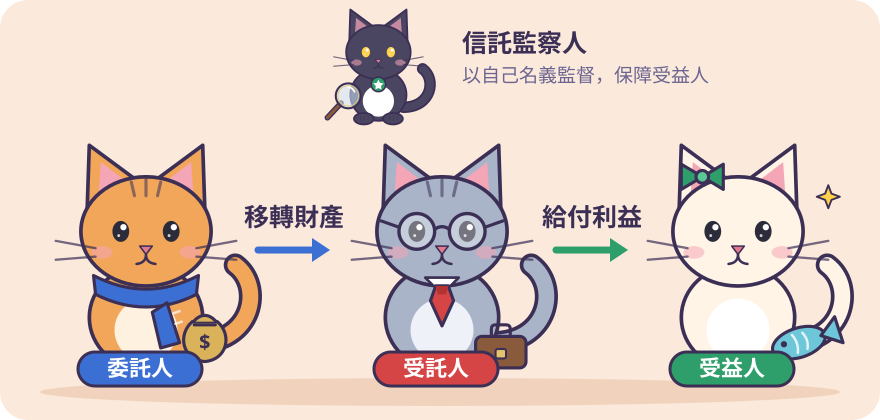

委託人、受託人、受益人
各自的名義與權責
信託財產有四道護盾
債權人不能亂碰
期限、金額、比例
用一張表記牢

委託人把財產權移轉出去，受託人依信託本旨，為受益人的利益或特定目的，管理或處分信託財產。
受託人是以「自己名義」管理處分，不是委託人或受益人名義。
承租人只認受託人的名義簽約、收租；租金交給受益人當生活費。
| 型態 | 成立時點 | 生效時點 | 考場陷阱 |
|---|---|---|---|
| 契約信託 | 雙方意思表示合致時 | 原則上成立即生效 | 最常見，實務上佔 90% 以上 |
| 遺囑信託 | 遺囑依法作成時 | 立遺囑人死亡時 | 成立與生效不同步（必考時間差） |
| 宣言信託 | 作成宣言時 | 經主管機關許可並作成宣言時 | 法人專屬，自然人不得辦理 |
| 法定信託 | 法定事由發生時 | 法定事由發生時 | 直接基於法律強制規定而成立 |
違反強制禁止規定、違反公序良俗、以訴訟為主要目的、以不得受讓財產權之人為受益人。
委託人＝受益人。可隨時終止，成立時不課贈與稅。
第三人享有利益。契約成立時課贈與稅；非經全體同意不得任意終止。
以交付當時的財產型態分類。甲交付 5,000 萬現金給銀行，指示全數買商辦大樓出租，仍是金錢信託。
不得投資未上市股票、期貨與不動產。
善良管理人注意義務（§22）。無償也一樣。
完全為受益人著想，不准圖利自己。違反所得歸入信託財產（§35）。
與自有財產、其他信託財產分別管理，金錢分別記帳（§24）。
原則上自己處理信託事務；信託行為另有訂定或有不得已事由才可複委託（§25）。
善管、忠實、
分開、親自！
未成年人、受監護或輔助宣告之人、受破產宣告之人；存續期間發生者當然解任。
受託人破產，信託財產不入破產財團；受託人死亡，也不是遺產。
受託人個人的債，不能拿來和信託財產的債權抵銷。
債權債務或物權同歸受託人，也不因混同而消滅。
委託人個人的債權人，不得查封拍賣信託財產。
信託房屋火災領的保險金、土地徵收補償費、賣股票的價款，仍屬信託財產。純粹的債務不能單獨成立信託。
該財產上原有的權利。
例：早已設定的第一順位抵押權
為管理信託而產生的債務。
例：修繕房屋的工程款、仲介費
信託財產本身產生的稅。
例：地價稅、房屋稅
④ 其他法律有特別規定者。
甲把土地信託給乙，之後甲個人欠丙民間借款 200 萬。丙可以聲請查封該信託土地嗎？
不行。不是信託前的權利，也不是處理信託事務所生，受獨立性保護（§12）。
知有撤銷原因起 1 年不行使就消滅；信託成立逾 10 年也消滅。
土地、房屋：要信託登記。
有價證券：證券上載明信託財產；記名股票要通知公司載入股東名簿。
沒登記，契約在雙方之間照樣有效，只是不能對抗善意第三人。
🟢 口訣：「知悉起算一年，成立逾期十年失效」
① 信託契約有明確約定 ② 事先取得委託人書面同意
信託財產只是流經受託人；稅穿透受託人，向實質受益人課。
不是等到「實際分配」才課，避免把獲利留在信託專戶遞延。
| 階段 | 自益信託 | 他益信託 |
|---|---|---|
| 成立時 | 形式移轉，免稅 | 課委託人贈與稅（契約成立時） |
| 存續中 | 依所得發生年度，課受益人綜合所得稅 | |
| 消滅時 | 返還委託人，免稅 | 實質移轉，履行約定 |
| 比較 | REITs（基金型） | REATs（資產型） |
|---|---|---|
| 本質 | 資金運用型 | 資產流動型（融資） |
| 順序 | 先有錢，再買樓收租 | 先有樓，切塊換現 |
| 型態 | 開放型或封閉型 | 通常為封閉型 |
| 租稅 | 收益分配採分離課稅 10% | |
| 比較 | SPT（特殊目的信託） | SPC（特殊目的公司） |
|---|---|---|
| 組織 | 契約信託關係 | 股份有限公司法人 |
| 最低資本額 | 受託機構 20 億 | 10 萬 |
| 發行證券 | 受益證券 | 資產基礎證券 |
資產賣斷給 SPV，創始銀行倒閉，其債權人也不能查封該批資產 ＝ 破產隔離。
優先／次順位證券、超額擔保、備償準備金。次順位先吸收損失。